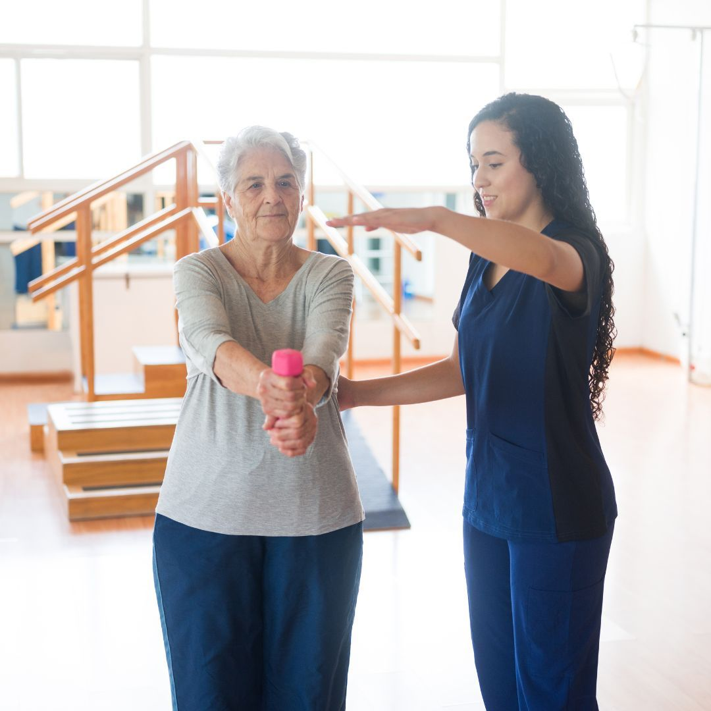

01
Functional Assessment
Your physiotherapist evaluates movement, strength, balance and daily functional requirements.
Personalised physiotherapy and rehabilitation designed to support mobility, balance, strength and independence in older adults.

Geriatric Rehabilitation focuses on helping older adults maintain or improve physical function, mobility, balance and independence. Treatment is adapted according to each person's abilities, health needs and goals.
Physiotherapy may include appropriate strengthening exercises, balance activities, mobility training and functional exercises as part of an individualised rehabilitation programme.
Assessment considers mobility, strength, balance and functional requirements.
Exercises may focus on safe movement, balance and functional mobility.
Rehabilitation aims to support confidence and independence in everyday activities.
Geriatric Rehabilitation is a personalised approach to physiotherapy that supports older adults with movement, strength, balance and functional activities.
Your physiotherapist evaluates movement, strength, balance and daily functional requirements.
Exercises and rehabilitation activities are selected according to individual abilities and goals.
Activities can be gradually progressed as strength, confidence and functional ability improve.
Depending on your assessment and individual requirements, rehabilitation may include several areas of physical function.
Exercises may help develop balance, coordination and confidence during everyday movement.
Appropriate strengthening exercises may support physical function and everyday activities.
Mobility exercises may focus on improving safe and confident movement.
Exercises can be based on everyday tasks and individual functional goals.
Suitable mobility and flexibility exercises may be included according to clinical needs.
Guided rehabilitation can help support confidence during functional movement.
Rehabilitation is adapted to the individual's abilities, health considerations and functional goals.
Appropriate exercises may support comfortable and functional movement.
Balance activities may help improve confidence during movement.
Strengthening exercises can support everyday physical activities.
Rehabilitation can focus on practical movement and everyday independence.
Discuss your concerns, mobility needs and rehabilitation goals with your therapist.
Your movement, strength, balance and functional abilities are assessed.
Appropriate exercises and movement activities are introduced under guidance.
Your programme may be adjusted as your functional abilities and confidence develop.
Here are some general questions about Geriatric Rehabilitation. Your physiotherapist can provide guidance based on an individual assessment.
Ask Our Team →Older adults experiencing mobility, balance, strength or functional difficulties may benefit from an individual physiotherapy assessment.
Rehabilitation programmes can be adapted to an individual's abilities, health considerations and goals. Suitability should be determined following assessment.
Yes. Where clinically appropriate, balance and coordination activities may be included as part of a personalised rehabilitation programme.
Yes. Exercises can be selected and progressed according to individual ability, tolerance and rehabilitation goals.
An assessment is recommended so your physiotherapist can understand your movement, functional needs and health considerations before planning treatment.
Speak with our physiotherapy team to understand whether Geriatric Rehabilitation may be appropriate for your individual needs.